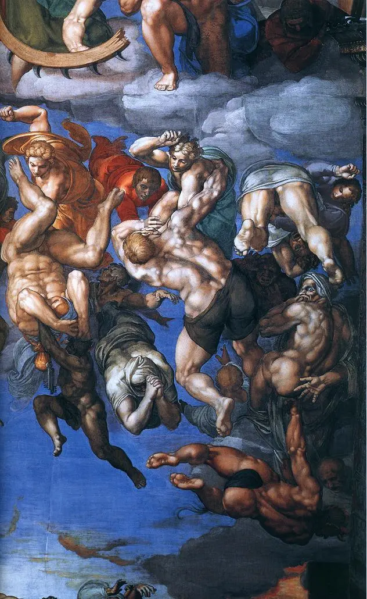
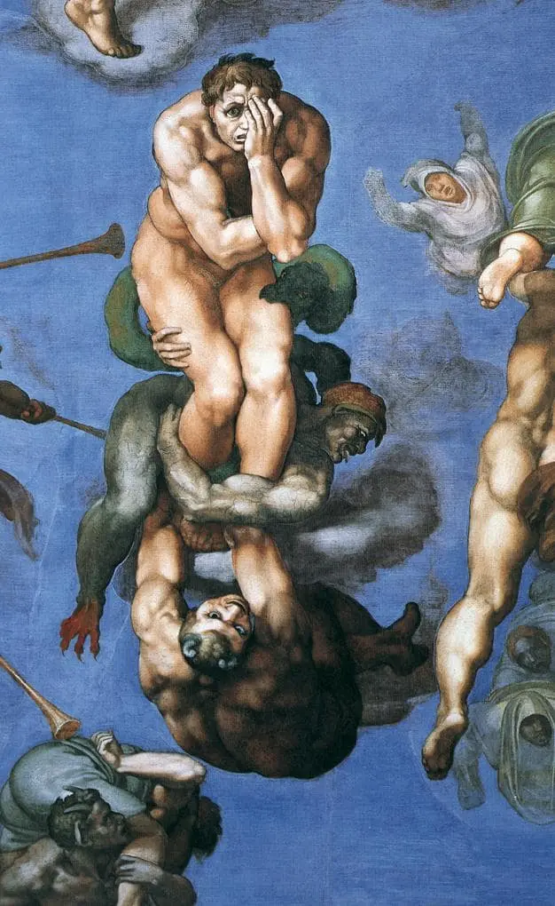
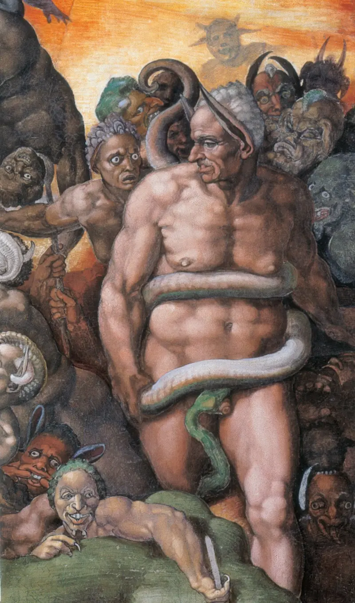
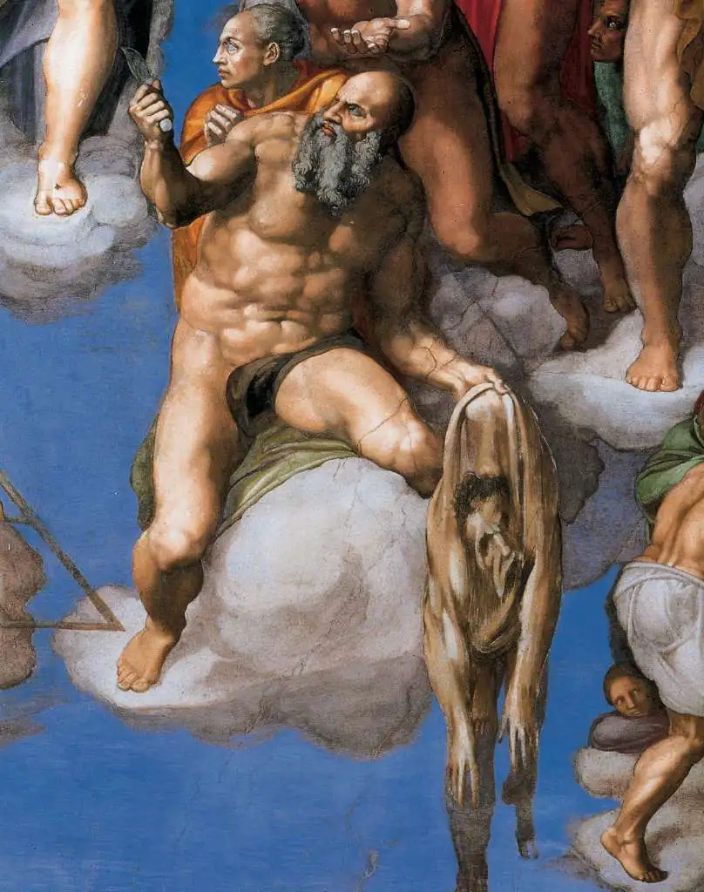
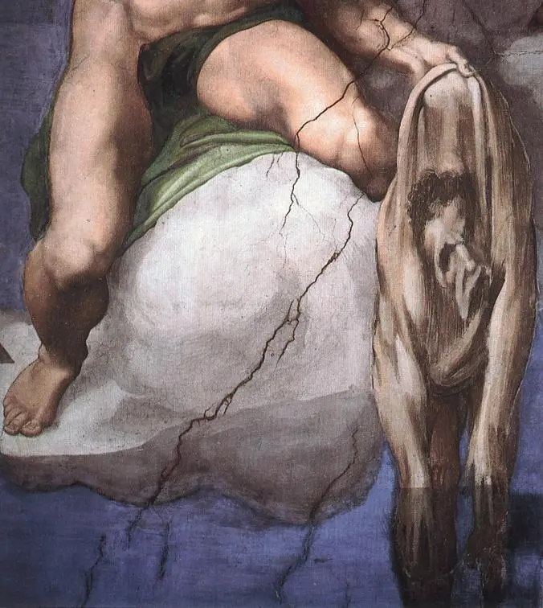
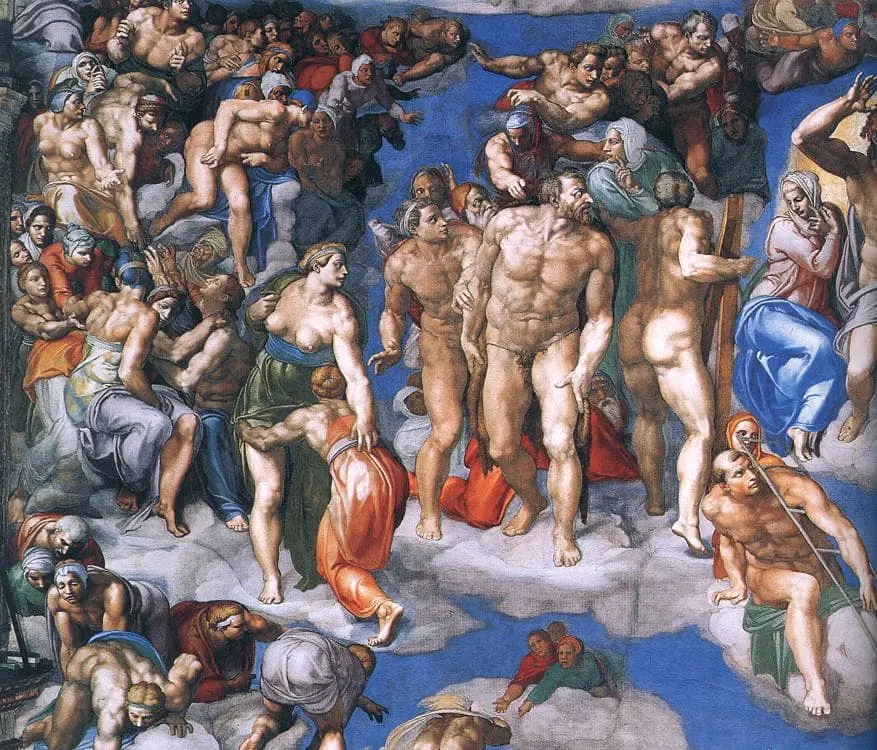
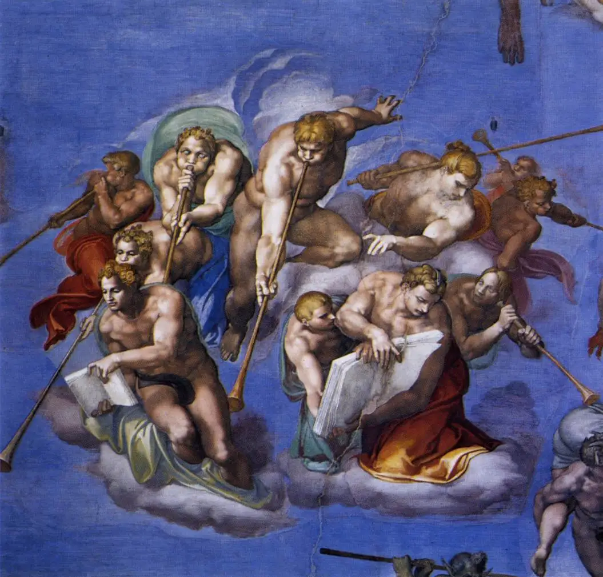
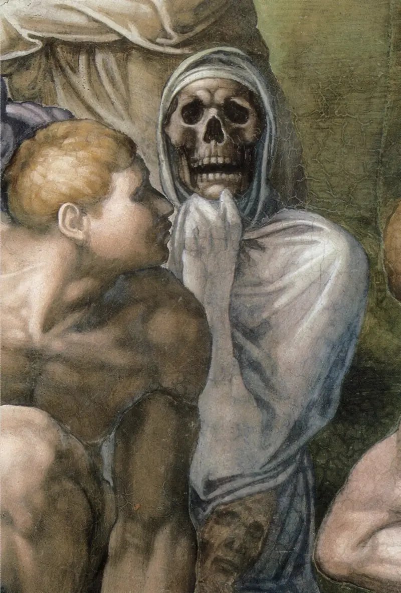

Giudizio Universale
Giudizio Universale
Michelangelo Buonarroti • 1535–1541 • 14 m x 12 m • Vernice, Gesso • Cappella Sistina
Torna alla home
Il Giudizio Universale è un affresco che decora la parete dell’altare della Cappella Sistina.
L’opera fu commissionata al grande maestro Michelangelo Buonarroti (1475-1564), nel 1534, da papa Clemente VII, il quale però morì prima che l’artista potesse iniziare il lavoro.
L’incarico fu confermato all’artista dal successivo pontefice, Paolo III Farnese, uomo di grande cultura e munifico mecenate, l’ultimo grande papa del Rinascimento. Michelangelo, come già aveva fatto prima di mettere mano alla Volta, tergiversò.
Stavolta non lo spaventava più la tecnica dell’affresco, che aveva imparato a padroneggiare, ma temeva di essere troppo anziano per ricoprire, da solo, 180 metri quadrati di parete.
Dalla precedente, massacrante impresa della Volta, infatti, il suo fisico non si era mai più completamente ripreso.
Ma il papa non volle sentir ragioni. I lavori iniziarono alla fine del 1536 e proseguirono fino all’autunno del 1541.
Per realizzare il suo Giudizio Universale, Michelangelo dovette murare due finestre e sacrificare i tre precedenti affreschi del Perugino e quelli delle lunette che lui stesso aveva dipinto vent’anni prima, assieme alla volta.
Una rivoluzionaria iconografia
Buonarroti elaborò la rappresentazione di una catastrofe immane, dove un’umanità inerme e sgomenta viene travolta dall’ira di Dio. Per rendere la scena più efficace, abbandonò ogni intelaiatura architettonica, sconvolgendo il concetto rinascimentale di spazio e di struttura prospettica. L’iconografia tradizionale del tema, che di norma prevedeva una rappresentazione gerarchica dei beati e dei dannati, venne profondamente alterata: Michelangelo, infatti, non organizzò le figure per fasce parallele ma le inserì in una sorta di gorgo, generato dal gesto impetuoso di Gesù.
 Michelangelo, Giudizio Universale, 1536-41. Particolare con Cristo e la Vergine.
Michelangelo, Giudizio Universale, 1536-41. Particolare con Cristo e la Vergine.
Cristo, al centro, ostenta un fisico possente, con un giovane volto privo di barba. Immane e terribile, con la sua mano destra salva i beati, mentre con la sinistra condanna i peccatori alla pena della dannazione eterna.
Accanto a lui, quasi spaventata da tanto divino furore, si rannicchia la Vergine. San Pietro, timoroso, gli restituisce le chiavi del Paradiso.
Tutti gli altri personaggi, sgomenti, nudi e variamente atteggiati, ruotano attorno al Giudice supremo in senso orario: da sinistra (dove assistiamo alla resurrezione dei morti) a destra (dove i dannati sono accolti da Caronte e Minosse), dal basso in alto e ancora in basso.
 Michelangelo, Giudizio Universale, 1536-41. Particolare con i dannati che precipitano all’Inferno.  Michelangelo, Giudizio Universale, 1536-41. Particolare con un dannato disperato, trascinato all’Inferno.  Michelangelo, Giudizio Universale, 1536-41. Particolare con Minosse. Michelangelo, Giudizio Universale, 1536-41. Particolare con un demone.
Michelangelo, Giudizio Universale, 1536-41. Particolare con un demone.
Questo modello compositivo “ruotante” fu adottato dall’artista per esprimere la sua concezione tragica dell’umanità, inerme di fronte al giudizio divino eppure grande ed eroica, anche nella colpa. Ai piedi di Gesù, san Bartolomeo, che morì scuoiato vivo, tiene in mano la sua pelle, afflosciata come un sacco vuoto: in questo macabro particolare, si riconosce l’autoritratto di Michelangelo.
 Michelangelo, Giudizio Universale, 1536-41. Particolare con san Bartolomeo.  Michelangelo, Giudizio Universale, 1536-41. Particolare con la pelle di san Bartolomeo (autoritratto di Michelangelo).Il Giudizio censurato
Vent’anni dopo averne dipinto la Volta, Michelangelo tornava, quindi, a lavorare all’interno della Cappella Sistina. Ma il mondo, nel frattempo, era cambiato. La Chiesa cattolica era sulle difensive: impegnata a fronteggiare la Riforma protestante, non tollerava alcuna forma di opposizione interna. Michelangelo, divenuto molto critico nei confronti della Curia romana, si era avvicinato a quei circoli che premevano per una riforma radicale del cattolicesimo. Con il suo nuovo affresco, ebbe l’ardire di portare il proprio malcontento nel cuore del palazzo pontificio. Fu certamente un azzardo. Il Giudizio, con la sua carica innovativa, apparve ai contemporanei quasi provocatorio e riuscì a scatenare una vera e propria polemica.
 Michelangelo, Giudizio Universale, 1536-41. Particolare con gli eletti.Vasari lo difese, ma tanti accusarono Michelangelo di aver stravolto la tradizionale iconografia cattolica (l’artista sembra infatti rifarsi ad una tradizione iconografica ben codificata in Europa e mostrare un interesse inopportuno per la cultura nordica), di essere irreligioso e di essersi abbandonato a scandalose licenze. Non erano soltanto i nudi a dar fastidio o, perlomeno, alla fine questi rappresentavano il problema minore. Preoccupavano, soprattutto, l’impostazione caotica della composizione, così poco ortodossa, così poco gerarchica (gli angeli, privi di ali, si confondono con tutti gli altri), e il diffuso senso di angoscia che sembra investire tanto i dannati quanto i beati e perfino le creature celesti.
 Michelangelo, Giudizio Universale, 1536-41. Particolare con gli angeli che suonano le trombe del Giudizio.In un momento storico in cui la Chiesa di Roma voleva comunicare solo certezze, tutto ciò risultava difficile da accettare. Finché furono in vita Paolo III e il suo successore Giulio III, le critiche non sortirono particolari effetti. Ma sotto papa Paolo IV Carafa (il Grande Inquisitore) e Pio IV, Michelangelo corse seriamente il rischio di finire sotto processo per eresia. Pio IV valutò di far cancellare l’opera ma venne dissuaso. Morto Michelangelo, nel 1564, un documento conciliare decretò di intervenire sull’affresco. L’anno dopo, Daniele da Volterra (1509 ca.-1566), un pittore della scuola michelangiolesca, coprì a secco con panneggi le nudità di santi e dannati, guadagnandosi, per questo incarico, l’appellativo di “braghettone”. La sciagurata censura a base di pannicelli continuò anche nei secoli successivi, fino a quando tutti i genitali non sparirono alla vista. In occasione dell’ultimo, straordinario restauro dell’affresco, terminato nel 1994, molti drappi sono stati cancellati. Non tutti, però: in fondo, anche le “braghe” del Volterra fanno parte della storia di quest’opera.
 Michelangelo, Giudizio Universale, 1536-41. Particolare con la resurrezione dei morti. Torna all'artista